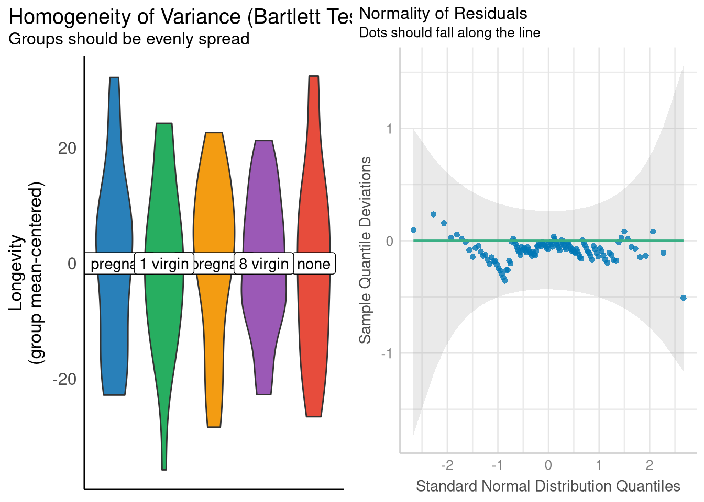

No analyses are carried out in this section, so this section is omitted from the R Companion. However, this stub is included to keep the section numbers in each chapter consistent with the STAT2 text.
5.2 The One-way Randomized Experiment and Its Observational Sibling
No analyses are carried out in this section, so this section is omitted from the R Companion. However, this stub is included to keep the section numbers in each chapter consistent with the STAT2 text.
5.3 Fitting the Model
There are many different ways to carry out an ANOVA in R, several of which involve R packages outside of the base set of packages installed with R by default. Here, we’ll focus on how to carry out the so-called “one-way” or “one-factor” ANOVA that is the topic of Chapter 5.3 using only the tools included with base R.
The first analysis we’ll replicate is the ANOVA based on the Undoing data set, which is presented incrementally across Examples 5.6 and 5.9. The Undoing data set holds results from an observational study of one patient’s progress using psychotherapy to treat OCD. Transcript’s from the patient’s psychotherapy sessions were rated by other therapists one a 1 to 4 scale measuring the inverse severity of the patient’s OCD symptoms (a rating of 1 means “severe symptoms”, and a rating of 4 means “no symptoms”). The transcripts were dividing into six chronologically ordered groups, allowing the researchers to measure how the symptom severity ratings given by the therapists changed as they read sessions progressively further along in the patient’s treatment.
For simplicity, the ANOVA presented in Section 5.3 only uses the rating data from the first, third, and fifth group of session ratings. The data from these three time points is shown below in Figure 5.1.
Figure 5.1: A subset of the observations in the Undoing data set reflecting OCD symptom severity ratings from three different time points.
One such to execute an ANOVA with these data is to
First use the lm() function to a linear model that regresses your outcome value on your categorical explanatory variable
Then carry out the ANOVA and F-test for each explanatory variable in your model by calling the anova() function on your linear model object.
For example, we can replicate the ANOVA table from Example 5.9 by doing:
undoing_model <-lm(Score ~ Group, data = Undoing_subset)anova_table <-anova(undoing_model)anova_table
One difference between this ANOVA table, and the one presented in Example 5.9, is that this table lacks a “Total” row showing the overall degrees of freedom and sums of squares. This is not a serious loss, and if that information is ever need, you can sum the degrees of freedom and sum of squares columns in the ANOVA table to recover it:
R also includes an aov() function which combines step 1 (fitting the regression model) and 2 (calculating the sums of squares, mean squares, and F-statistics to construct the ANOVA table) into one step. We’ll demonstrate the aov() function by replicating the ANOVA for the Leafhoppers data set that is presented across Examples 5.5 and 5.5.
The Leafhoppers data set holds results from an experiment that studied how the lifespan of Potato Leafhopper insects was impacted by earning diets containing solely sugar compounds (Sucrose, Glucose, and Fructose). The data set 8 observations (two observations for each sugar compound, plus a control condition), and are shown below in Figure 5.2.
Figure 5.2: Leafhopper survival time (in days) plotted against the leafhopper’s diet
Finally, we’ll replicate the ANOVA table from Example 5.7 using the aov() function. The aov() function effectively serves as a drop-in replacement for the lm() function: you supply the aov() function with a model formula describing your outcome and explanatory variables (as well as the data set where they cane be located), and it supplies you with an ANOVA table:
leafhoppers_anova <-aov(Days ~ Diet, data = Leafhoppers)summary(leafhoppers_anova)
Df Sum Sq Mean Sq F value Pr(>F)
Diet 3 3.92 1.307 17.42 0.00925 **
Residuals 4 0.30 0.075
---
Signif. codes: 0 '***' 0.001 '**' 0.01 '*' 0.05 '.' 0.1 ' ' 1
5.4 Assessing and Using the Model
Section 5.4 explains that the F-statistic created from the \(\frac{MS_{Model}}{MS_{Error}}\) ratio can be used to test the null hypothesis that \(\mu_1 = \mu_2 = ... \mu_j\) where \(j\) indexes the groups of data defined by the categorical explanatory variable in the model.
The p-values shown in R’s ANOVA tables answer the question “What is the probability of observing an F statistic as extreme or more extreme than the one computed from this sample of data, if \(\mu_1 = \mu_2 = ... \mu_j\)?”. These p-values are computed by finding \(P(F >= \frac{MS_{Model}}{MS_{Error}})\) using an F distribution with \(j-1\) and \(n-j\) degrees of freedom. However, for this probability to accurately measure \(P(F >= \frac{MS_{Model}}{MS_{Error}})\), then \(\frac{MS_{Model}}{MS_{Error}})\) must actually follow the pattern of an \(F_{j-1, n-j}\) distribution. Whether or not this is true boils down to the pattern of residual errors within each group of data, the \(y_{ij} - \mu_j\) values. Specifically,
The residuals (both within and across groups) must reflect a random process
The residuals (both within and across groups) must be independent
The residuals have the same degree of variability in each group
The residuals are normally distributed
If these conditions look familiar to you, it’s because they are; these are fundamentally the same assumptions (independence, equal variance, normality) that supported the use of t-tests on the \(b_k\) coefficients of a linear regression model (which makes sense, given that an ANOVA is just a particular way of analyzing the fit of a linear model). The only difference here is that the equality of variance we’re interested in regards the error variability observed within each group of residuals, rather than assessing the equality of the residual error between each observation and a single, global regression line.
There isn’t any universal method of assessing the validity of the first two conditions for inference; in other words, there aren’t any “stock” visualizations or hypothesis tests that can be applied to any ANOVA to assess whether randomness and independence are reasonable assumptions to make about your residual errors. Rather, you should ask yourself these questions:
When observations differ from the group mean, to what do I attribute this difference?
If you can explain exactly why a particular observation differs from the group mean, then this residual probably isn’t random
Is there anything that directly links two residuals errors together, aside from the fact that they are in the same group?
For example, ff two residual errors come from the same person, or the same household, then these residual errors will probably be more similar to each other than any other randomly chosen residual errors, and thus, are not independent.
As recommended by the STAT2 text, the Normality and equal variance assumptions can be assessed by plotting distribution of residuals within each group, and well as a Normal-quantile plot for the residuals respectively. The quickest way to create these two plots are with the check_homogeneity() and check_normality() functions from the performance package. To demonstrate, we’ll replicate the ANOVA for the fruit flies data set used in Example 5.11, and reproduce Figure 5.14. First, we’ll need to load the data, and fit the ANOVA model:
data("FruitFlies")fruitfly_anova <-aov(Longevity ~ Treatment, data = FruitFlies)summary(fruitfly_anova)
Df Sum Sq Mean Sq F value Pr(>F)
Treatment 4 11939 2984.8 13.61 3.52e-09 ***
Residuals 120 26314 219.3
---
Signif. codes: 0 '***' 0.001 '**' 0.01 '*' 0.05 '.' 0.1 ' ' 1
Next, we’ll pass our aov model object to the check_homogeneity() and check_normality() functions. These functions themselves do not create the visualizations; rather, the plot() function must be called on the objects returned by check_homogeneity() and check_normality() to see the visualizations. We’ll use the grid.arrange() function (from the gridExtra package) to place them side-by-side in the same figure:
library(performance)library(see)library(gridExtra)variance_check <-check_homogeneity(fruitfly_anova)normality_check <-check_normality(fruitfly_anova)grid.arrange(plot(variance_check),plot(normality_check, type ="qq"),ncol =2 )

The check_homogeneity() function describes the residuals in each group using violin plots instead of box plots. If you aren’t familiar with reading violin plots, a good introduction is found here (just ignore the Python code if you don’t speak Python).
If you’d rather use box plots instead of violin plots, we’ll have to construct them “manually”. We can do this without too much trouble by using the broom::augment() function to obtain a data frame holding residual errors for each observation in the data, and then using ggplot() to plot the distribution of these residuals for each group of fruit flies.
library(broom)residuals <-augment(fruitfly_anova)
Warning: The `augment()` method for objects of class `aov` is not maintained by the broom team, and is only supported through the `lm` tidier method. Please be cautious in interpreting and reporting broom output.
This warning is displayed once per session.
head(residuals, 5)
boxplots <-ggplot(data = residuals,mapping =aes(x = Treatment, y = .resid) ) +geom_boxplot()grid.arrange(boxplots,plot(normality_check, type ="qq"),ncol =2 )
For confidence bands, please install `qqplotr`.
Both plotting approaches (the violin plot and box plot methods) encourage use that the conditions for inference (equal variance and normality of the residuals) are quite reasonably met in this case.
When running the code above, the augment() function may give you warning, cautioning that you that “The augment() method for objects of class aov is not maintained by the broom team…”. In this situation, we can safely ignore this warning. But, that may not be the case for other, more complex ANOVA analyses carried out in Chapter 8, specifically those that divide the residual errors into different “strata”.
5.5 Using Plots to Help Choose a Scale for the Response
5.6 Multiple Comparisons and Fisher’s Least Significant Difference
A “significant” F-test from an ANOVA variance indicates “At least one group of observations has a mean value that is ‘significantly’ different than the mean value of least one other group of observations”. In other words, a “significant” F-test indicates “a difference exists”, but doesn’t identify the nature of this difference.
For example, the “significant” F-test Leafhoppers ANOVA in Section 5.3 indicates “There is a difference among the average lifespans of Leafhoppers who consume different sugar compounds”, but we don’t yet know if this difference exists amongst the Glucose and Sucrose groups, the Fructose and Sucrose groups, or both! To address this question, we’ll need to contrast the means in each group.
Section 5.6 focuses on a method of contrasting each pair of group means (called Fisher’s Least Significant Difference) that allows you to hold the false positive rate across the family of contrasts of contrasts a chosen small value (e.g., .05). We’ll execute the Least Significant Difference contrasts “by hand” for the Leafhoppers ANOVA.
Fisher’s LSD procedure compares each difference in means to a “threshold” value called the Least Significant Difference. This Least Significant Difference (LSD) is defined as \[
LSD = min_{j, k} \bigg\{t^* \cdot \sqrt{\frac{MS_{Error}}{n_j} + \frac{MS_{Error}}{n_k}}\bigg\}
\]
where
\(N\) is total number of observations in the data set.
\(J\) is the total number of groups (i.e., the number of levels belonging to the explanatory variable).
\(t^*\) is the \(1-\frac{\alpha}{2}\) quantile of the t distribution with \(N-J\) degrees of freedom, and \(\alpha\) is the significance level used for the F-test from the ANOVA.
\(MS_{Error}\) is the Mean Square Error (computed from the ANOVA model).
\(n_j\) and \(n_k\) are the number of observations in the \(i\)-th and \(j\)-th group respectively.
For an unbalanced design (where each group has a different number of observations), we would have to compute \(\frac{j(j-1)}{2}\) different candidate LSD values times (one for each possible pair of groups) and take the minimum of those \(\frac{j(j-1)}{2}\) values as our LSD. However, since the Leafhopper data set is balanced (each group has 2 observations), the LSD won’t change, so we can compute it exactly once.
Thus, for the Leafhoppers ANOVA, we have
N <-8J <-4n_j <-2t_star <-qt(1- (.05/2), df = N-J)t_star
Now that we have the LSD threshold, we compare it against each of the 6 differences in means. The quickest way to compute each the pairwise differences in means is with the emmeans() package:
Thus, according to Fisher’s LSD procedure, we can infer than Leafhoppers eating Glucose and Sucrose (but not those eating Fructose) will live longer on average than Leafhoppers eating the control diet, and Leafhoppers eating Glucose and Sucrose will live longer on average than Leafhoppers eating Fructose. In other words, the significant F-test from our ANOVA appears to have been driven by longer lifespans for the insects consuming Glucose and Sucrose compared to the other two groups (control and Fructose).